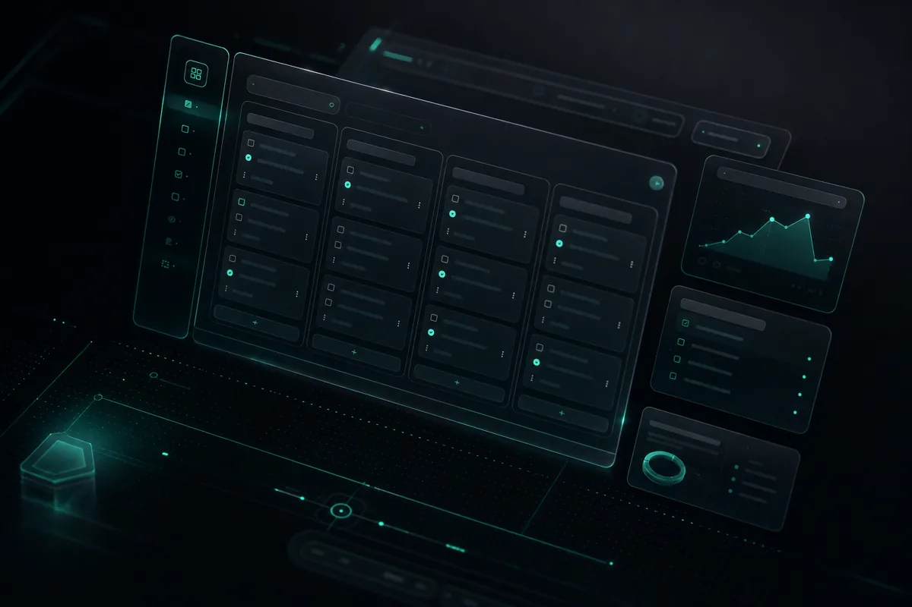

01Taskapp — Client React
Le front de Taskapp : un client React monté avec Vite, rechargement à chaud, linting Oxlint, structure de composants pensée pour accueillir un board de tâches filtrable. L'objectif était un bundle léger et un temps de démarrage quasi instantané en développement.
- React
- Vite
- JavaScript
- Oxlint
- HMR